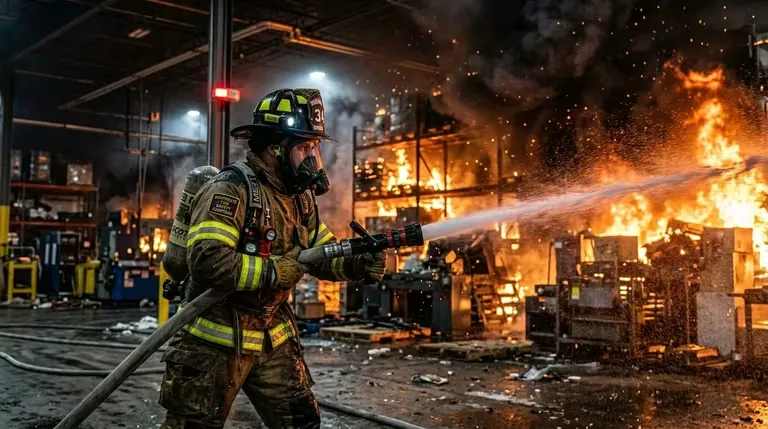

LGA Contraincendios: referencia en Querétaro para equipo certificado
Querétaro es hoy uno de los estados con mayor dinamismo industrial de México. El Bajío —y el corredor automotriz e industrial que concentra en ese estado— ha atraído en los últimos 15 años a decenas de plantas de manufactura, parques industriales y desarrollos logísticos que operan bajo estrictos estándares de seguridad internacional. En ese contexto, LGA Contraincendios se ha consolidado como proveedor de referencia en equipo contra incendios para la región.
Lo que distingue a LGA en el mercado queretano es una combinación poco común: amplitud de catálogo —con extintores para todas las clases de fuego (A, B, C, D y K)—, operación como e-commerce técnico que permite comprar directamente en línea, y una propuesta de acompañamiento técnico para proyectos de sistemas PCI que va más allá de la simple venta de equipo portátil.
El modelo de tienda en línea de LGA también le ha permitido atender clientes fuera de Querétaro —incluyendo Guanajuato, Aguascalientes, San Luis Potosí y otras entidades del Bajío y el centro del país— sin necesidad de presencia física en cada ciudad.
El contexto industrial que explica la propuesta de LGA
Para entender por qué LGA tiene sentido como empresa, conviene entender el entorno industrial de Querétaro. El estado alberga parques industriales como el Parque Industrial Querétaro, el Parque Industrial Bernardo Quintana, El Marqués y el corredor de El Salto — todos con alta concentración de plantas de manufactura automotriz, aeroespacial, alimenticia y química.
Estas plantas tienen en común una exigencia normativa alta: operan bajo estándares de aseguradoras internacionales (FM Global, Zurich, AXA), siguen guías corporativas de seguridad que referencian NFPA, y son auditadas periódicamente tanto por sus casas matrices como por protección civil del estado de Querétaro.
Esta demanda de equipo certificado y de proveedores con capacidad técnica verificable es el nicho que LGA Contraincendios ocupa en el mercado queretano.
Con más de 1,000 empresas extranjeras instaladas y presencia de industria aeroespacial, automotriz y farmacéutica, Querétaro es el mercado donde los compradores de equipo contra incendios son más sofisticados y técnicamente exigentes del Bajío.
Las cinco clases de fuego y por qué LGA cubre todas
La mayoría de los distribuidores de extintores en México se concentran en los tipos de mayor volumen: polvo ABC y CO₂. LGA Contraincendios cubre las cinco clases de fuego reconocidas internacionalmente, lo que le permite atender industrias con riesgos específicos que los proveedores generalistas no pueden resolver adecuadamente.
Clase A — Sólidos combustibles
La clase A cubre materiales sólidos ordinarios: madera, papel, textiles, cartón, algunos plásticos. Es la clase de fuego más común en oficinas, bodegas de materias primas y espacios de trabajo general. El agente más efectivo es el agua (por enfriamiento) o el polvo ABC (por sofocación e inhibición química). LGA distribuye extintores de polvo ABC y de agua presurizada para esta clase.
Clase B — Líquidos y gases inflamables
La clase B incluye gasolina, diésel, aceites minerales, solventes, pinturas, gas LP y otros líquidos o gases inflamables. Requiere extintores de polvo ABC, polvo BC, espuma AFFF o CO₂. En la industria automotriz y química del Bajío, los riesgos de clase B son frecuentes: líneas de pintura, almacenes de solventes, tuberías de gas.
Clase C — Equipos eléctricos energizados
La clase C identifica incendios en o cerca de equipo eléctrico bajo tensión. El agente extintor no debe ser conductor de electricidad. Los agentes apropiados son CO₂, polvo BC/ABC y agentes limpios (FM-200, Novec). En plantas industriales modernas con alta densidad de automatización y cuartos de control, los fuegos de clase C son un riesgo prioritario.
Clase D — Metales combustibles
La clase D es la más especializada. Cubre metales que arden: magnesio, titanio, zirconio, litio, sodio, potasio, aluminio en polvo. Estos metales reaccionan violentamente con el agua y con los halógenos, por lo que los agentes estándar están contraindicados. Se requieren extintores con polvo seco especial de clase D (Lith-X, Met-L-X o equivalente), aplicado en forma de cortina sin perturbar el metal en combustión. La industria aeroespacial de Querétaro —con trabajo en aleaciones de titanio y aluminio— es un cliente natural de esta línea.
Clase K — Grasas y aceites de cocina
La clase K cubre aceites y grasas vegetales o animales en equipos de cocción a alta temperatura. La particularidad de este tipo de fuego es que el aceite puede estar a 300–400°C cuando se inicia el incendio, lo que hace que los extintores de agua o polvo sean ineficaces o peligrosos (el agua provoca proyección violenta del aceite en llamas). El agente correcto es acetato de potasio, que actúa por saponificación creando una costra que sella la superficie.
LGA atiende con extintores de clase K a cocinas industriales, restaurantes de cadena, hoteles y cualquier operación con freidoras de inmersión o superficies de cocción industrial.
| Clase | Combustible | Agente recomendado | Contraindicado | Sector típico |
|---|---|---|---|---|
| A | Madera, papel, textiles | Polvo ABC, agua | CO₂ solo (no enfría brasas) | Oficinas, bodegas |
| B | Gasolina, solventes, gases | Polvo ABC/BC, espuma, CO₂ | Agua a chorro | Petroquímica, automotriz |
| C | Equipo eléctrico energizado | CO₂, polvo BC, agente limpio | Agua, espuma (conductores) | Manufactura, CPD |
| D | Metales: Mg, Ti, Li, Al | Polvo especial clase D | Agua, CO₂, polvo ABC | Aeroespacial, farmacia |
| K | Aceites y grasas de cocina | Acetato de potasio | Agua, polvo ABC | Cocinas industriales |
Catálogo de productos: qué distribuye LGA Contraincendios
El catálogo de LGA va más allá de los extintores portátiles. La empresa opera como proveedor integral de protección pasiva y activa para el sector industrial y comercial de Querétaro y el Bajío.
Extintores portátiles — línea completa
La línea de extintores de LGA cubre todas las clases de fuego con distintas capacidades:
- Extintores de polvo ABC: 1, 2.5, 4.5, 6, 9, 12, 25, 50 kg. Cilindro de acero con imprimación epoxi.
- Extintores de CO₂: 2.5, 5, 10 kg. Cilindro de acero sin costura, bocina de descarga dieléctrica.
- Extintores de agua: 6, 9 L. Para fuegos clase A en bodegas y almacenes.
- Extintores AFFF: 6, 9 L. Para plantas con riesgo de clase B.
- Extintores de agente limpio: FM-200 y Novec 1230 en 2.5 y 4.5 kg. Para salas de control y CPD.
- Extintores clase D: Con polvo Lith-X o Met-L-X para metales combustibles. Bajo pedido con especificación del metal.
- Extintores clase K: 6 L de acetato de potasio. Con embudo de aplicación para cocinas industriales.
Sistemas de rociadores y componentes
Para proyectos de sistemas nuevos o ampliaciones, LGA distribuye rociadores automáticos, válvulas de control y accesorios de sistema en las configuraciones más comunes de NFPA 13: pendente, montante, de respuesta rápida y ESFR para alto rack.
Gabinetes contraincendios y mangueras
LGA suministra gabinetes tipo I, II y III (NFPA 14) en versiones superficiales, empotrables y semiempotradas, con mangueras de 38 y 65 mm. También distribuye boquillas de neblina y chorro recto para brigadas internas.
Equipo de protección personal (EPP) para brigadas
Una línea que LGA ha desarrollado para diferenciarse es el equipo de protección personal para brigadas de emergencia internas: cascos de protección contra incendio, trajes de aproximación, guantes y botas de cuero con punta de acero. Este EPP es requerido por la NOM-002-STPS para todas las empresas que tienen brigadas de emergencia.
Señalización de emergencia
LGA distribuye señales fotoluminiscentes y de seguridad para rutas de evacuación, salidas de emergencia, ubicación de extintores e hidrantes. La señalización correcta es obligatoria por la NOM-003-SEGOB y es requerida en todas las inspecciones de protección civil.
Botiquines y equipo de primeros auxilios
Como complemento al equipo contra incendios, LGA incluye en su catálogo botiquines de primeros auxilios industriales, camillas rígidas y desfibriladores DAE (DEA) para atención de emergencias médicas. La integración de este equipo en una sola compra facilita el cumplimiento de protección civil para empresas que están equipando su programa de seguridad completo.
El modelo e-commerce de LGA: compra técnica en línea
Lo que distingue a LGA de la mayoría de sus competidores en Querétaro es su capacidad de operar como e-commerce técnico de equipos contra incendios. En un mercado donde la compra de equipo de seguridad industrial tradicionalmente implicaba visita de vendedor, cotización en papel y espera de días, LGA ofrece un modelo de compra directa en línea con especificaciones técnicas claras por producto.
El catálogo en línea de LGA incluye fichas técnicas descargables, parámetros de selección por clase de fuego y área protegida, y la posibilidad de ordenar tanto extintores individuales para reposición puntual como pedidos de volumen para proyectos de instalación inicial.
Para clientes con proyectos más complejos —donde la selección del equipo requiere visita técnica o memoria de cálculo— LGA mantiene un canal de atención especializada que complementa el e-commerce.
En el mercado de equipos contra incendios, la compra en línea era rara hace 10 años. Hoy, responsables de mantenimiento, facility managers y compradores industriales prefieren la transparencia de un catálogo digital con especificaciones técnicas verificables. LGA fue pionera en este modelo en Querétaro.
Sectores atendidos por LGA en Querétaro y el Bajío
La posición geográfica de LGA en Querétaro le permite atender eficientemente los principales sectores industriales y de servicios de la región:
Industria automotriz y manufactura
Las plantas de ensamblaje, estampado, pintura y logística del sector automotriz en Querétaro —proveedores de Tier 1, 2 y 3 de marcas como Bombardier, Hella, Bosch y otros— son clientes típicos de LGA. Sus riesgos de fuego combinan clases A (papel, embalaje), B (solventes de pintura, aceites de corte) y C (paneles de control, robots), lo que requiere una combinación de extintores que LGA puede suministrar en un solo pedido.
Industria aeroespacial
Querétaro es el hub aeroespacial más importante del Bajío, con empresas como Bombardier, Safran, General Electric y sus proveedores. La industria aeroespacial trabaja con aleaciones de titanio, aluminio de alta pureza y composites, materiales que pueden ser combustibles clase D. LGA es uno de los pocos distribuidores en la región que maneja extintores de clase D con agentes especializados.
Industria alimenticia y farmacéutica
Plantas de alimentos y farmacéuticas tienen requerimientos de limpieza extremos: no solo el extintor debe ser efectivo, sino que el agente extintor no puede contaminar áreas de producción. Los extintores de CO₂ y agente limpio —que no dejan residuo— son los indicados para estas instalaciones. LGA los distribuye en capacidades industriales.
Hoteles y desarrollos inmobiliarios
El boom turístico e inmobiliario de Querétaro ha generado una demanda creciente de equipamiento contra incendios en hoteles, desarrollos de vivienda vertical y centros comerciales. LGA atiende este segmento con extintores, gabinetes contraincendios, señalización y botiquines en un paquete integral.
Cocinas industriales y restaurantes
La cadena hostelera queretana —con presencia de grupos nacionales e internacionales— requiere específicamente extintores clase K para sus cocinas. LGA es referencia para este tipo de equipo especializado en la región.
Certificación y cumplimiento: lo que LGA garantiza
Todo el equipo distribuido por LGA cumple con la normativa aplicable vigente en México:
Para extintores portátiles, la certificación NOM-154-SCFI es obligatoria y verificable: el número de certificado del organismo certificador acreditado por la SCFI aparece en la etiqueta del extintor. LGA provee documentación de certificación vigente para cada equipo.
Para sistemas PCI (rociadores, hidrantes, alarma), los equipos son de fabricantes con listado UL (Underwriters Laboratories) y aprobación FM (Factory Mutual), los estándares internacionales de mayor reconocimiento en el sector industrial.
Esta documentación es la que los clientes presentan ante autoridades de protección civil de Querétaro, aseguradoras internacionales y auditores internos de sus casas matrices.
Servicio de mantenimiento y recarga en Querétaro
La compra de un extintor es solo el inicio de la relación de un cliente con LGA. La normativa mexicana e internacional establece ciclos de mantenimiento obligatorios que LGA gestiona para sus clientes:
- Inspección mensual (usuario): Verificación visual del extintor, acceso libre, seguro y etiqueta. LGA capacita a los responsables internos del cliente para realizar estas inspecciones.
- Mantenimiento anual (técnico certificado): Recarga completa, revisión de válvula y sello, reemplazo de etiqueta con fecha. LGA programa visitas de mantenimiento para clientes con contratos.
- Prueba hidrostática periódica: Cada 5 años para cilindros de CO₂ y cada 12 años para cilindros de acero de polvo. LGA realiza esta prueba en taller con equipamiento certificado.
Los clientes industriales de LGA —plantas con decenas o cientos de extintores— valoran especialmente la capacidad de agendar el mantenimiento anual de toda la flota en una sola visita coordinada, minimizando la interrupción operativa.
Cobertura de envío y atención fuera de Querétaro
El modelo e-commerce de LGA Contraincendios permite atender pedidos en toda la república mexicana. Para extintores portátiles y equipo de pequeño formato, LGA realiza envíos con paquetería especializada en materiales de seguridad. Para pedidos de volumen —equipamiento de plantas completas, nuevos edificios, proyectos de instalación inicial— LGA coordina el envío con logística a medida y puede incluir asesoría técnica remota durante el proceso de instalación.
Las entidades del Bajío con mayor demanda desde el e-commerce de LGA incluyen Guanajuato, Aguascalientes, San Luis Potosí y Michoacán, donde la densidad industrial es alta pero la oferta local de proveedores técnicos certificados es más limitada.
Contacto LGA Contraincendios
México
Por qué LGA Contraincendios es la referencia queretana en extintores clase D y K
En el mercado de extintores en México, el 95% de los distribuidores trabaja principalmente con polvo ABC y CO₂. Es el volumen del mercado y donde está el margen más accesible. Los extintores de clase D y clase K son nichos técnicos que requieren inventario de bajo volumen, alto conocimiento del riesgo y capacidad de asesorar correctamente al cliente sobre la aplicación específica.
LGA Contraincendios ha construido esa capacidad técnica en Querétaro, un mercado donde la industria aeroespacial demanda clase D y la industria hostelera demanda clase K con frecuencia suficiente para justificar mantener inventario activo y personal técnico familiarizado con ambos tipos.
Para un facility manager o responsable de protección civil en la región del Bajío que necesita equipo correcto para riesgos específicos —no solo el extintor más barato disponible—, LGA representa la opción técnicamente más completa del mercado queretano.